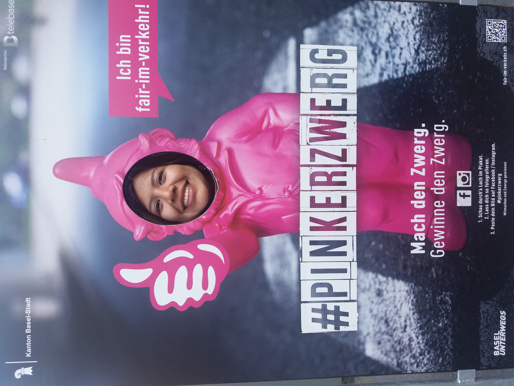
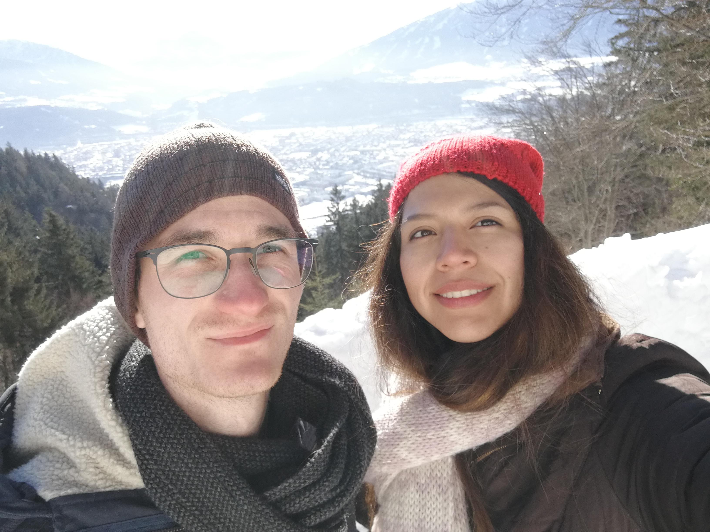
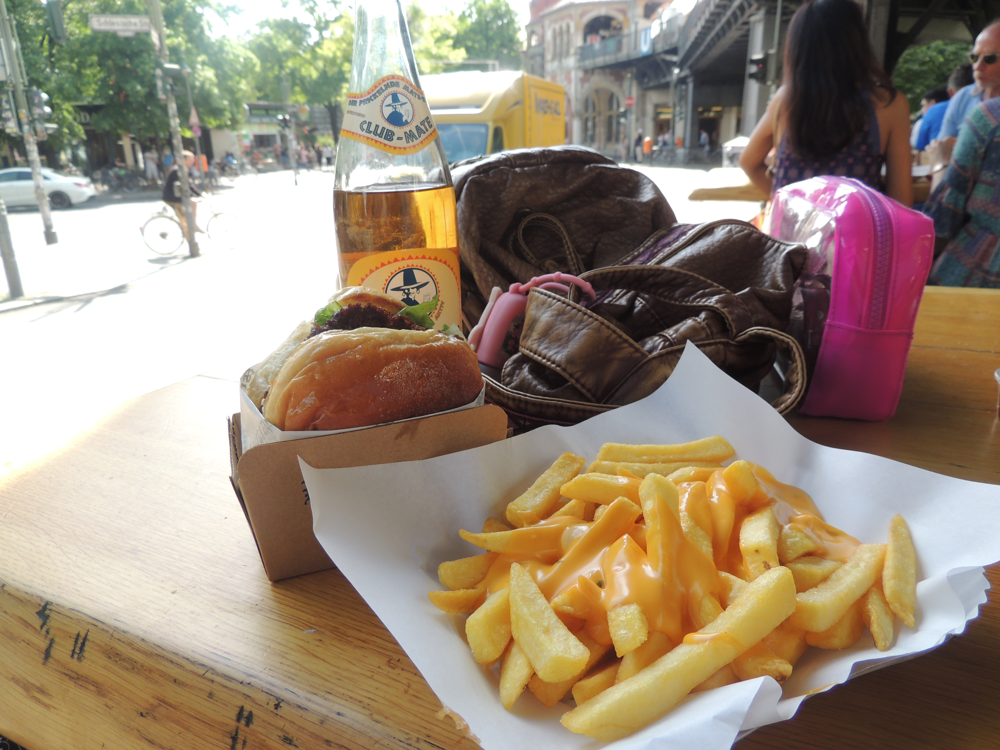
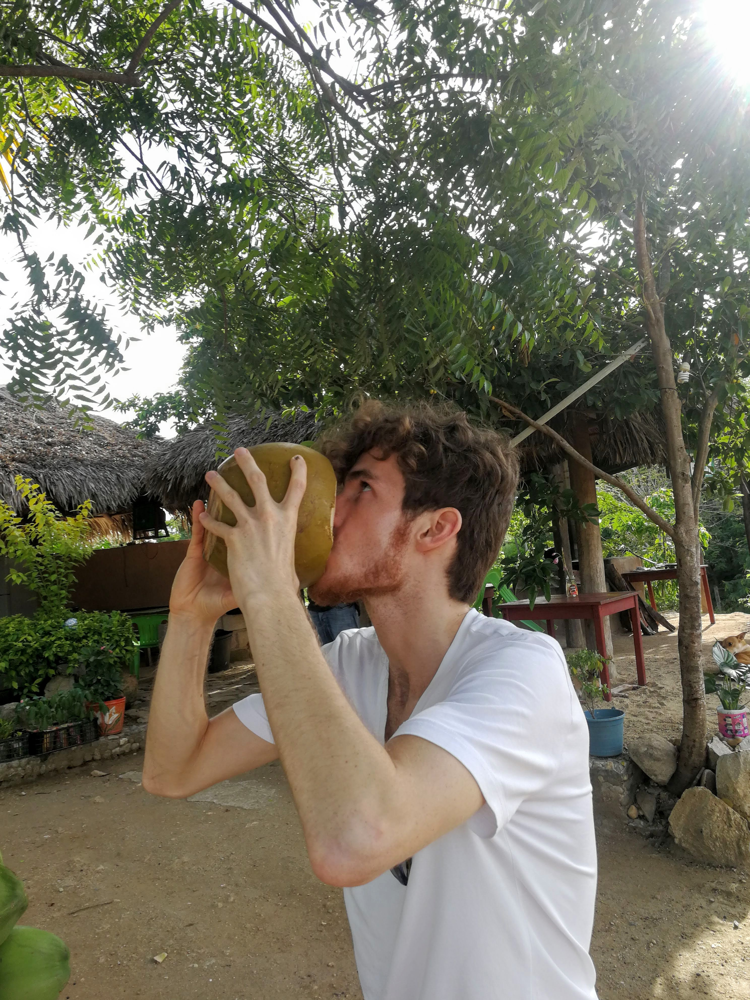
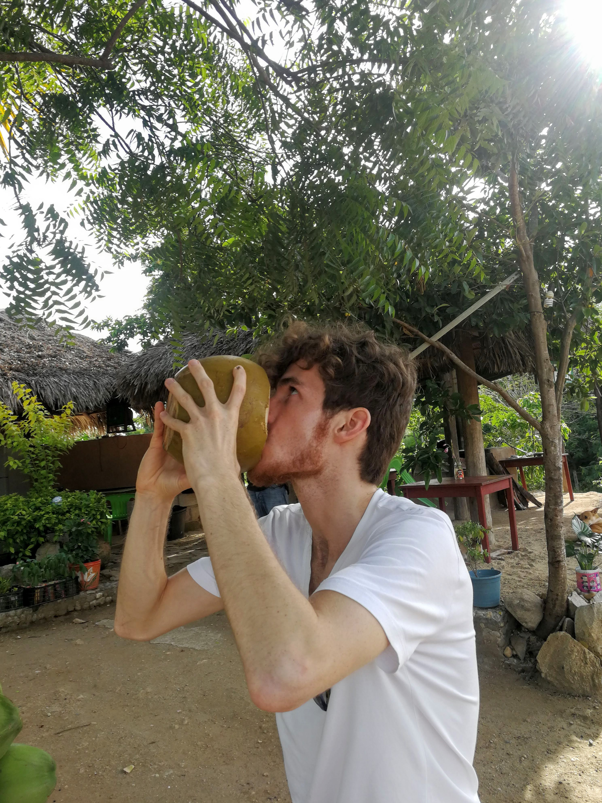

Carmen, Por Eso Te Amo
Alles Gute zum 25. Geburtstag, meine liebste Carmen! Ich liebe Dich so sehr; Liebe ist ein Gefühl, das viel größer ist als der Mensch. Es ist nicht rational. Dennoch will ich versuchen, meine Liebe für Dich in 25 Gründen auszudrücken. Here you go.
1. Weil du wunderschöne Augen hast
2. Weil du Tiere liebst
3. Weil Du vielfältig bist

4. Weil du auch im Winter nach Europa kommst

5. Weil wir zusammen große Projekte beginnen und abschließen
6. Weil es mit dir immer was zu lachen gibt
7. Weil du mit mir Club Mate in Berlin trinkst

8. Weil ich in deinem verrückten Land viel lernen kann

9. Weil du Größe zeigst
10. Weil du sexy bist
11. Weil du viele Fotos machst, auch wenn ich eigentlich schon weitergehen will
12. Weil du mir die schönen Seiten des Lebens zeigst

13. Weil du auch ohne Filter super aussiehst
14. Weil du mir Heidelberg sympathisch gemacht hast
15. Weil du genau zeigst, wenn dir etwas nicht gefällt
16. Weil du in schwierigem Gelände super fährst
17. Weil du eine äußerst nette Familie hast
18. Weil du meine Kinderfotos liebst
19. Weil du mein Leben heller machst
20. Weil: "God Bless México"
 

21. Weil wir zusammen ein supergemütliches Sofa gekauft haben
22. Weil du mir die Mercados in Cholula und Libertad gezeigt hast
23. Weil ich lächeln muss, wenn ich dich sehe
24. Weil wir bald ins Café "Glücklich" in Ravensburg gehen
25. Einfach, weil es so ist

Danke für alles. Auf viele weitere Jahre.
In Liebe, dein Simon